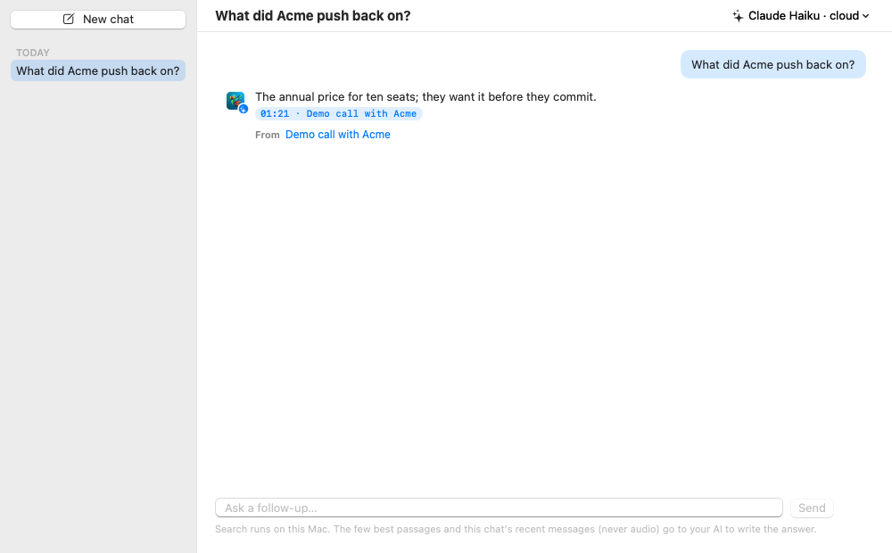

Parrot remembers every call it has finished. Ask it anything, like "What did I promise Acme?" or "What did Jeremy say about pricing in August?", and you get a short answer where every fact carries a small chip such as 12:34 · Acme renewal. Click the chip and that meeting opens at that exact line, ready to play.

Open Ask Parrot from the sidebar, press ⌘K anywhere, or click Ask on a meeting page to ask about that one call.
Every question you ask starts or continues a saved chat, listed on the left. Click New chat to start fresh. Right-click any chat to Rename… or Delete it.
Ask a follow-up like "and what did we offer them?" and Parrot keeps the thread, so you don't have to repeat who or what you're asking about.
Click a time chip to open that meeting at that exact moment. A chip that reads "deleted" means that meeting is gone.
A question like "What did I promise this week?" covers many meetings at once. Words like today, yesterday, this week, last week, this month and last month narrow the search to that period.
The name in the top-right corner of the chat says which AI is writing the answer. Switch it there, or in Settings → Copilot → Model → Ask Parrot. Pick Ollama to keep it free and on your Mac.
If Ask's AI is Ollama and Ollama isn't open, or the model isn't downloaded yet, a message at the top of the chat says so, with Check Again or Download (size) to fix it.
A new chat shows Get written answers with two buttons: Use Claude (needs a key) and Use a free AI on this Mac. Without an AI, Parrot still works: it shows the closest moments from your meetings instead of a written answer.
Search always runs on your Mac. Only the best passages and this chat's recent messages go to a cloud AI to write the answer; with a local model through Ollama, nothing leaves at all. Meetings recorded on-device only never leave your Mac, including in earlier answers that used them.
Stop cancels an answer that's still writing. Your question goes back in the box so you can edit or resend it.
When your calendar is connected and a call starts with someone you've met before (same invitees, or the next meeting in a recurring series), the Copilot's Briefed card shows the open items from last time: next steps and promises from that meeting's report. The Copilot keeps them in mind and flags them when they come up. This is read straight from your own report, on your Mac, with no extra AI call.